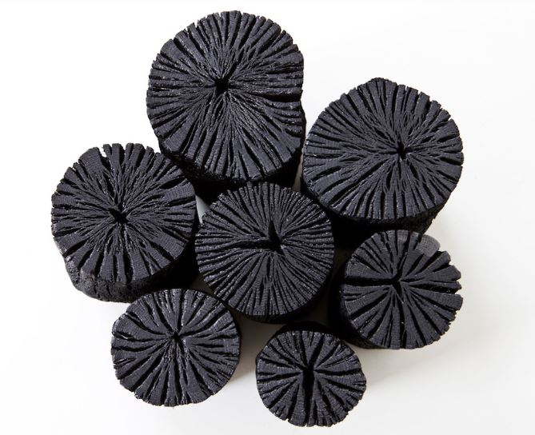

Charcoal Artist Uses DIY Spirit to Lead Full Country Life

In a mountainous farming village near the Oze National Park, a popular eastern Japan marshland frequented by hikers, an artist who crafts accessories and ornaments out of charcoal is using the spirit of DIY to lead full country life. Michiko Setoyama, 39, a former accessory store manager in Tokyo's busy Shibuya shopping district, gave up her stressful city life 15 years ago and pursued farming, charcoal burning and her artisan accessory craft in the village of Katashina in Gunma Prefecture, about a three-hour drive north of the capital. Overcoming difficulties such as living in a house without running water or parenting without relatives' support in a village with an aging population of some 4,500, her motto is to "create whatever is necessary" and "forge a path while keeping an easygoing outlook."
"I came up with the idea to make charcoal accessories after seeing a man who put a piece of charcoal in his pocket as a charm," recalled Setoyama, who took up her craft about a decade ago after looking for something to do in winter, the traditional downtime for agriculture. She also runs ski equipment rental business in the cold months. Charcoal is known to have various capabilities such as water purification and odor elimination in addition to its traditional use as fuel for heating and cooking. Besides cultivating about 40 chemical-free crops of various types -- including beans, leafy vegetables, tomatoes and rice -- with her husband Hiromitsu, 51, in the rented fields spanning a total of some 7,500 square meters, she regularly helps Kenichi Sudo, 60, her "master" and a second-generation charcoal burner in the village. Sudo's work involves cutting logs of oak, cedar and other timber types with a chainsaw, putting the pieces in a charcoal-burning hut and letting the process play out over about 10 days before cutting the product into charcoal briquettes ready for shipping. Setoyama assists by moving wood to and from the hut.
"I was interested in using the small charcoal pieces left over from the production process and found that after they are soaked in wood vinegar, charcoal dust doesn't stick to the fingers," a necessity if the charcoal is to be used to make accessories, Setoyama said. Wood vinegar, or pyroligneous acid, is a dark liquid produced by the destructive distillation of wood. She occasionally holds charcoal accessory workshops at her home, originally a cattle barn renovated by the couple over a three-year period, and during events in the village, Tokyo and elsewhere. In Tokyo, Setoyama demonstrated how to make charcoal accessories and ornaments at two events held in October and November. As part of preparations, she had gathered pinecones, twigs and grasses in the forests nearby her home to be used in the craftwork.
"Participants quietly crafted their own items using charcoal pieces, beading and natural materials, while concentrating on their handiwork. For ornaments, they hot-glued decorative pieces to the top of charcoal stubs. "It was easy and (the ornament) looks lovely. I will use it at home to replace a plant that has recently withered," said Minae Tsukui, a 22-year-old Gunma native who joined a workshop in Tokyo. Ayuko Shimizu, 36, who became acquainted with Setoyama during her past visits to Katashina, made a simple set of earrings at another session. "I've bought her charcoal accessories before but produced a piece for myself for the first time. It was difficult to think about design and how to put the parts together, but I enjoyed it very much," Shimizu said.
For Setoyama, promoting the craft is a part of her efforts to sustain the charcoal burning business, which has been declining in Japan with its traditional use for winter heating at home no longer widespread. Sudo's main customers are Japanese restaurants using charcoal in their grills. Setoyama says her ultimate goal is to work in the forestry industry "to take care of increasingly untended mountains and promote the creation of a sustainable farming community." "My husband and I have been growing crops in small lots with no pesticides, no fertilizer and without plowing soil in pursuit of a natural way of farming, but we hit a snag because mountains surrounding our fields are left unattended," Setoyama said.
Her husband Hiromitsu, a Tokyo native who settled in the village, pointed out monkeys, boars and other mountain-dwelling animals often eat crops grown in the fields because their staples such as nuts have been becoming more scarce due to weather shifts possibly linked to climate change. There is also a shortage of hunters, he said. "Such a problem boils down to the lost tradition of people taking care of the mountains. In the past, they thinned forests and burned firewood or charcoal produced as a result, making the mountainous environment sustainable," Setoyama said. The native of Yokohama, southwest of Tokyo, ventured into rural life when she was 24 after she felt pressure to achieve sales targets as an accessory shop manager and became uncomfortable with the cycle of "mass production and consumption" in the business.
"At that time, I didn't pay much attention to what I eat and my eczema symptoms got worse. When I looked in the mirror, I didn't look good and I thought I wouldn't make a good mother if I have a child in the future," said Setoyama, who now has a 5-year-old daughter. Through an online search, Setoyama landed a part-time job at a resort inn in Katashina and worked there for three months during which her skin condition cleared up. She then took aim at soybeans and worked for a tofu shop as she was alarmed by Japan's heavy reliance on bean imports. In the village, she cultivated beans with elderly local farmers and was gradually drawn into their lifestyle. "They invited me to their house every day and I came to appreciate their simple style of living," she said. The Setoyamas now grow soybeans themselves, making miso bean paste which they sell directly to clients and also at events.
The farmer blogs about her life in the countryside and writes columns in a magazine on the wisdom of Kaoru Sudo, 92, the mother of the charcoal burner Kenichi and Setoyama's "miso-making master." "I'd like to erase the negative image of farm life so that people, especially children, can become familiar with traditional country living," Setoyama said. Even in the holiday period, she and her daughter as well as their friends collected their own Christmas trees from the local forest. "On weekends, villagers here drive to a major shopping center in the prefecture, but I'd like to convince them that mass consumption isn't the way to go," she said. "Our community has everything."